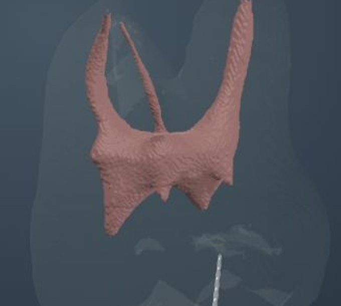

EndoTech
Canal file sequence
← Molar collection
Loading complete molar…
Complete file + tooth
Drag to rotate · Scroll to zoom · Right-drag to pan
One finger rotates · Pinch to zoom · Two fingers pan

Opening interactive model…